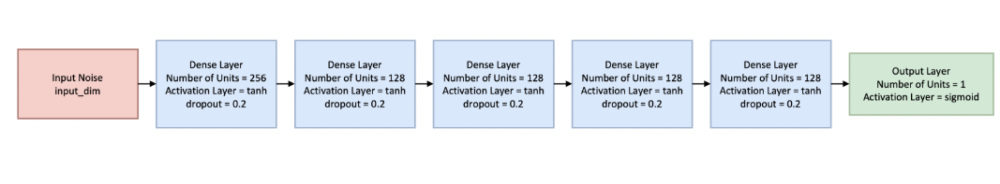
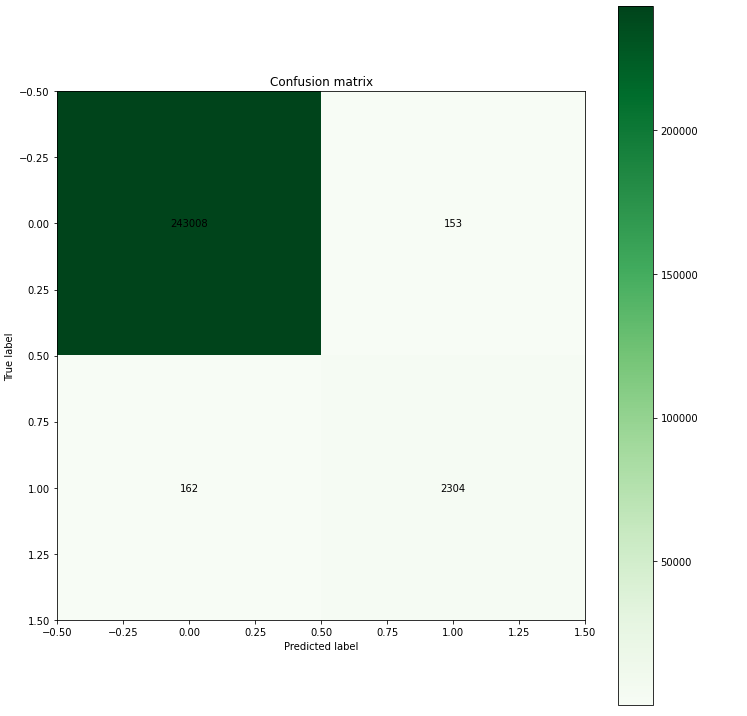
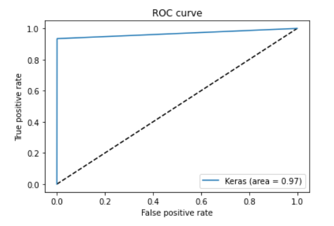

GAN-based (Generative Adversarial Network) Detection
Implements a GAN architecture to learn normal network traffic patterns
Uses the discriminator to detect anomalies
Achieves high accuracy in distinguishing normal vs anomalous traffic
The Generator Architecture

The Discriminator Network
About the model and the Traning
The generator first predicts on a batch of noise samples. As the generator has randomly initialized weights initially, the output of the generator at this stage is nothing but meaningless values.

The Discriminator inputs a stack of samples - the first half of which is the output of the generator and the second half is a batch of data samples from the real dataset. We train the Discriminator on this stack with the target labels 0 (Fake) for half the stack and 1 for the second half of the stack. The result of this is that the Discrimator is able to distinguish between the Real and Fake samples.

The weights of the discriminator are frozen by setting the trainable parameter to False.
To train the Generator, We first feed it random noise and let the entire GAN output a probability with the Discriminator weights remaining frozen. As expected this value would be less than 0.5 since the Discriminator was previously set to output a value close to 0 if the input was not genuine .

Now comes the trick. We tell the GAN that the expected output is 1. This results in the errors being backpropagated only to the Generator. With every sample in the batch the generator's weights are tuned such that the output of the GAN is close to 1, meaning the Generator is now learning to produce samples that resemble the real data.
This process loops back to the first step for each batch in the training set.
Accuracy Score : 0.9987175676941052
Precision : 0.9377289377289377
Recall : 0.9343065693430657
F1 : 0.9360146252285192
GAN Confusion Matrix
GAN Roc Curve:
